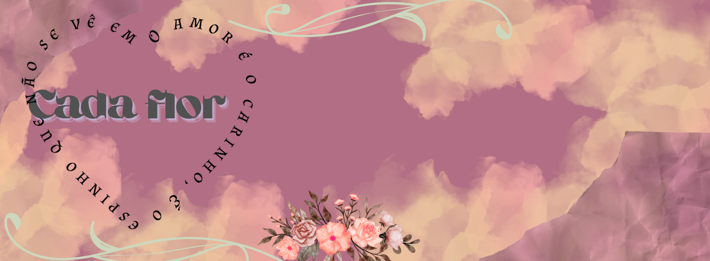

Vinicius de Moraes (1913–1980) foi um dos maiores nomes da cultura brasileira. Poeta, compositor e diplomata, ele uniu a poesia à música popular e ajudou a criar a Bossa Nova, ao lado de Tom Jobim.
Começou como escritor, com livros de poesia desde os anos 1930. Mais tarde, aproximou-se da música e passou a compor letras que falavam de amor, beleza, cotidiano e espiritualidade, com linguagem simples e profunda.
Entre suas músicas mais conhecidas estão:
“Garota de Ipanema” – com Tom Jobim, se tornou um dos maiores sucessos brasileiros no mundo.
“Chega de Saudade” – considerada o marco da Bossa Nova.
“Eu Sei Que Vou Te Amar”, “A Felicidade”, “Samba da Benção”, “Tarde em Itapoã” – com parceiros como Toquinho e Baden Powell.
Vinicius valorizava a beleza da vida e das emoções humanas. Ficou conhecido por seu romantismo, por gostar de viver intensamente e por seu estilo único de escrever e compor.